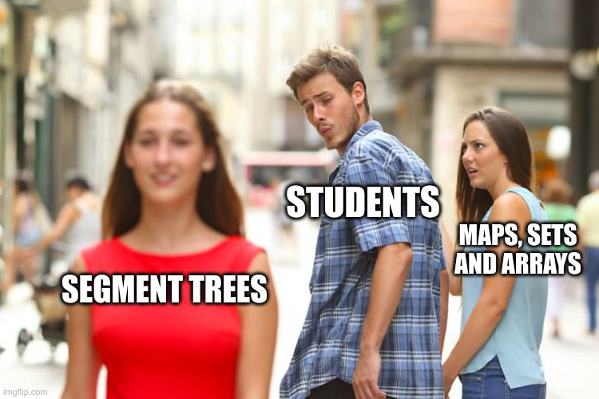

Main learning outcomes for this class
- Range Minimum Query (RMQ):
- I know the RMQ problems and what is asks for
- I know variants, such as asking for the maximum or the sum (RSQ)
- Square-root (srt) decomposition
- I know the meaning of decomposing an array of size n into buckets of size sqrt(n)
- I know how to answer an RMQ query using sqrt decomposition
- I know how to do a single update in RMQ using sqrt decomposition
- I understand how to adapt it to variations such as RSQ.
- Segments trees:
- I understand the concept of segment trees
- I know how how to implement segment trees using simple arrays
- I know how to answer an RMQ query using segment trees
- I know how to do a single update in RMQ using segment trees
- I understand how to adapt the merge function of a segment tree to more complex variations (including storing several values in a node, like for instance in a merge sort tree)
- I know and understand the concept of lazy propagation to make range updates
- I know and understand the concept of offline processing and how I can (re)sort queries to make a good usage of segment trees
- I know and understand the concept of 2D Segment Trees for generalizing to a 2D case
Study Material
- Videos:
- General References in websites:
- Example Implementations:
- Book References:
I want my memes!
😁 When you learn about segment trees

😁 2D segment trees
😁 Lazy propagation
Pedro Ribeiro - DCC/FCUP | Last update: